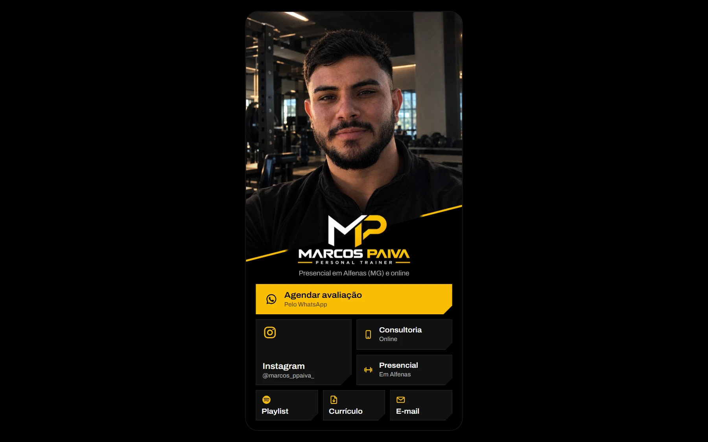

Presencial em Alfenas (MG) e online
Personal
Trainer
Para Marcos Paiva
Olá, Marcos! Vim pelo seu link na bio e quero agendar uma avaliação.
Meu objetivo é: ___
Já treino? ( ) Sim ( ) Não
Link na bio
Tudo em uma tela só
Agendar avaliação
Direto no WhatsApp
Mensagem pronta
O aluno só completa o objetivo

No computador
O mesmo cartão, no centro
Agende sua avaliação
marcospaivapersonal.pages.dev
@marcos_ppaiva_